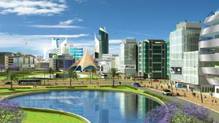
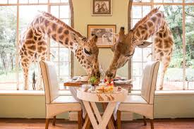
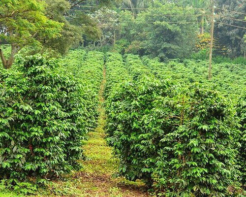
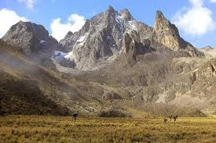
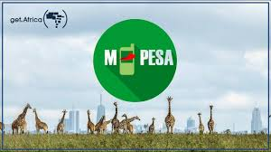

O país tem muitas surpresas! Veja algumas curiosidades interessantes que poucos conhecem.

O Quênia é conhecido como o "Vale do Silício da África". Nairobi tem um ecossistema de startups muito forte...
O Quenia domina as provas de longa distancia no atletismo mundial. Atletas quenianos ja ganharam dezenas de medalhas olimpicas. O segredo? O treinamento em altitude elevada nas terras altas do pais.

O Quenia abriga a maior populacao de girafas do mundo. No parque nacional de Nairobi você pode ver girafas bem de perto, inclusive alimentá-las!

O Quenia é um dos maiores produtores e exportadores de chá do mundo. O chá queniano é considerado um dos melhores do planeta por causa do solo vulcânico rico em nutrientes.

O Monte Quênia é a segunda montanha mais alta da Africa (5.199 metros). É um vulcão extinto e patrimônio mundial da UNESCO.

Criado no Quenia em 2007, o M-Pesa permitiu que milhões de pessoas sem conta bancária fizessem pagamentos pelo celular. Hoje é usado em vários países e mudou a vida de muita gente.
O Quênia é um país cheio de contrastes: modernidade tecnológica ao lado de tradições ancestrais Maasai. Vale muito a pena conhecer!